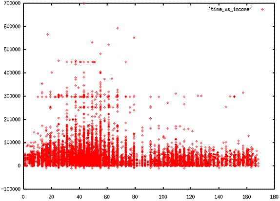
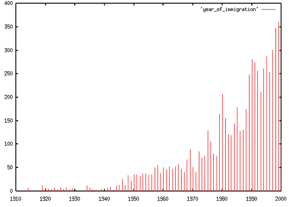

Example - creating a scatter plot
Does the early bird get the worm? Let's look at the relationship between the time a person leaves for work and their income. Income is recorded in columns 297-303, and the time a person leaves for work is recorded in columns 196-198, encoded in ten minute intervals. This pipeline extracts, cleans and formats the data:
$ cat pums_53.dat | grep "^P" | cut -c196-198,297-303 | grep -v "^000" |
grep -v " $" | perl -pe 'substr($_,3,0)=" ";' > time_vs_income
The greps knock out records for which either field is null, and the perl
script inserts a space between the two columns so gnuplot can parse the
columns apart. Plotting in gnuplot is simple:
$ gnuplot
G N U P L O T
Linux version 3.7 patchlevel 1
last modified Fri Oct 22 18:00:00 BST 1999
Terminal type set to 'x11'
gnuplot> plot 'time_vs_income' with points
And the resulting plot:

Recall that 0 on the x-axis is midnight, and 20 is 200 minutes after midnight or about 3:20am. Increased density in the beginning of the traditional 1st and 2nd shift periods is apparent. Folks who work regular business hours clearly have higher incomes. It would be interesting to compute the average income in each time bucket, but that makes a pretty hairy command line perl script. Here is it in all its gruesome glory:
$ cat pums_53.dat | grep "^P" | cut -c196-198,297-303 | grep -v "^000" |
grep -v " $" | perl -ne '/(\d{3})(\d{7})/; $sum{$1}+=$2; $count{$1}++; END { foreach $k
(keys(%count)) {print $k," ",$sum{$k}/$count{$k},"\n"}}' | sort -n > time_vs_avgincome
You can plot the result for yourself if you're curious.
Example - Creating a bar chart with gnuplot
Let's look at historic immigration rates among Washingtonians. Year of
immigration is recorded in columns 78-81, and 0000 means the person is a native
born citizen. We can apply the usual tricks with cut, grep, sort, and
uniq, but it's a bit hard to see the patterns when scrolling back and forth
in text output, it would nicer if we could see a plot.
$ cat pums_53.dat | grep "^P" | cut -c78-81 | grep -v 0000 | sort | uniq -c | head -10
2 1910
7 1914
12 1919
7 1920
6 1921
5 1922
7 1923
5 1924
8 1925
Gnuplot is a fine graphing tool for this purpose, but it wants the category
label to come first, and the count to come second, so we need to write a perl
script to reverse uniq's output and stick the result in a file. See
perlrun(1) for details on the -a and -F options to perl.
$ cat pums_53.dat | grep "^P" | cut -c78-81 | grep -v 0000 | sort | uniq -c |
perl -lape 'chomp $F[-1]; $_ = join " ", reverse @F' > year_of_immigration
Now we can make a bar chart from the contents of the file with gnuplot.
gnuplot> plot 'year_of_immigration' with impulses
Here's the graph gnuplot creates:

Be a bit careful interpreting this plot, only people who are still alive can be counted, so it naturally goes up and to the right (people who immigrated more recently have a better chance of still being alive). That said, there seems to have been an increase in immigration after the end of World War II, and also a spike after the end if the Vietnam war. I remain at a loss to explain the spike around 1980, consult your local historian.